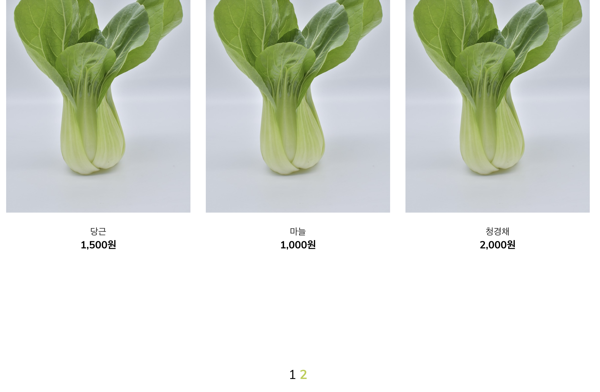
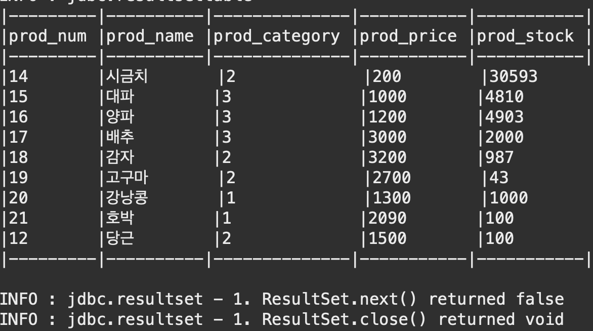

JAVA Spring) 1인가구를 위한 쇼핑몰 Uno más 개발일지 10 - 상품목록 페이징 처리
- 작성일 : 2022.05.03
-
작성자 : 황유진
- 팀원 : 김진영, 박승지, 반현빈, 오성은, 오은현, 윤정환, 황유진
- 팀장 : 황유진
- 부팀장 : 오성은
- GitHub Repository : https://github.com/miro7923/Uno-Mas
개발환경
- MacBook Air (M1, 2020)
- OpenJDK 8
- Spring Tool Suite 4.14.0
- Spring framework 4.3.1.RELEASE
- Tomcat 8.5
- MySQL Workbench 8.0.19
기간
- 2022.4.13 ~ 2022.5.20
주제
- 웹 백엔드 수업 중 마지막 과제로 팀 프로젝트를 진행하게 되었다.
- 조건은
Spring기반으로 웹 사이트를 제작하는 것이다. - 총 팀원은 7명이며, 우리 팀은
1인 가구를 위한 쇼핑몰을 주제로 정했다. - 팀 이름으로 정해진
Uno más는 스페인어로하나 더라는 뜻이다.
진행상황

- 상품목록페이지에서 한 페이지에 일정 개수의 상품들을 보여주고, 더 많은 상품은 다음 페이지에서 보여줄 수 있게 하는 페이징처리를 구현했다.
productMapper.xml
<?xml version="1.0" encoding="UTF-8"?>
<!DOCTYPE mapper
PUBLIC "-//mybatis.org//DTD Mapper 3.0//EN"
"http://mybatis.org/dtd/mybatis-3-mapper.dtd">
<mapper namespace="com.unomas.mapper.ProductMapper">
<!-- 대분류별 상품 개수 가져오기 -->
<select id="getProdCnt" resultType="Integer">
SELECT count(*)
FROM products AS p
JOIN detail_category AS d ON p.prod_category = d.dcate_num
JOIN top_category AS t ON d.dcate_num = t.topcate_num
WHERE p.prod_category BETWEEN #{cateStart} AND #{cateEnd}
</select>
</mapper>
- 대분류별 상품 개수를 가져오는 쿼리문이다.
- 하나의 대분류에는 여러 개의 소분류가 있고 이들은 각자의 테이블에서 관리된다. 소분류는 대분류의
PK인 인덱스 번호를 참조한다. 그리고 각 상품은 소분류 테이블의PK인 인덱스 번호를 참조한다. 그래서 각 대분류별로 소분류의 인덱스 범위를 지정해 준 다음에 그걸 기준으로 상품 테이블에서 해당 상품들을 찾아오도록 했다.
ProductDAO.java
public interface ProductDAO {
// 대분류별 상품 개수 가져오기
public Integer getProductCnt(int cateStart, int cateEnd) throws Exception;
}
ProductDAOImpl.java
@Repository
public class ProductDAOImpl implements ProductDAO {
@Inject
private SqlSession sqlSession;
private static String NAMESPACE = "com.unomas.mapper.ProductMapper";
private static final Logger log = LoggerFactory.getLogger(ProductDAOImpl.class);
@Override
public Integer getProductCnt(int cateStart, int cateEnd) throws Exception {
Map<String, Integer> paramMap = new HashMap<String, Integer>();
paramMap.put("cateStart", cateStart);
paramMap.put("cateEnd", cateEnd);
return sqlSession.selectOne(NAMESPACE + ".getProdCnt", paramMap);
}
}
- 먼저 대분류별 전체 상품의 개수를 구해온다.
ProductDAOTest.java
@RunWith(SpringJUnit4ClassRunner.class)
@ContextConfiguration(
locations = {"file:src/main/webapp/WEB-INF/spring/root-context.xml"}
)
public class ProductDAOTest {
@Inject
private ProductDAO dao;
private static final Logger log = LoggerFactory.getLogger(ProductDAOTest.class);
@Test
public void 대분류별상품개수가져오기() throws Exception {
log.info(dao.getProductCnt(1, 3)+"");
}
}
- 서비스 코드에 넣기 전 테스트를 진행했다. 결과가 잘 나왔기 때문에 다음 단계로 넘어간다.
productMapper.xml
<mapper namespace="com.unomas.mapper.ProductMapper">
<!-- 상위 카테고리별 한 페이지에 표시할 만큼만 가져오기 -->
<select id="getListOnPage" resultType="ProductVO">
SELECT *
FROM products AS p
JOIN detail_category AS d ON p.prod_category = d.dcate_num
JOIN top_category AS t ON d.dcate_num = t.topcate_num
WHERE p.prod_category BETWEEN #{cateStart} AND #{cateEnd}
ORDER BY p.prod_regdate desc LIMIT #{startRow}, #{pageSize}
</select>
</mapper>
- 다음으로는 한 페이지에 표시할 만큼만 상품 목록을 가져온다.
- 지정된 소분류 인덱스 범위 내에서 페이지 하나에 표시할 개수만큼만 가져오는 쿼리문을 작성했다.
ProductDAO.java
public interface ProductDAO {
// 상위 카테고리별 한 페이지에 표시할 만큼만 상품 목록 불러오기
public List<ProductVO> getProductList(int cateStart, int cateEnd, int startRow, int pageSize) throws Exception;
}
ProductDAOImpl.java
@Repository
public class ProductDAOImpl implements ProductDAO {
@Inject
private SqlSession sqlSession;
private static String NAMESPACE = "com.unomas.mapper.ProductMapper";
private static final Logger log = LoggerFactory.getLogger(ProductDAOImpl.class);
@Override
public List<ProductVO> getProductList(int cateStart, int cateEnd, int startRow, int pageSize) throws Exception {
Map<String, Integer> paramMap = new HashMap<String, Integer>();
paramMap.put("cateStart", cateStart);
paramMap.put("cateEnd", cateEnd);
paramMap.put("startRow", startRow-1);
paramMap.put("pageSize", pageSize);
return sqlSession.selectList(NAMESPACE + ".getListOnPage", paramMap);
}
}
- 쿼리문이 다소 복잡했으므로 이것 또한 잘 되는지 테스트를 진행했다.
ProductDAOTest.java
@RunWith(SpringJUnit4ClassRunner.class)
@ContextConfiguration(
locations = {"file:src/main/webapp/WEB-INF/spring/root-context.xml"}
)
public class ProductDAOTest {
@Inject
private ProductDAO dao;
private static final Logger log = LoggerFactory.getLogger(ProductDAOTest.class);
@Test
public void 페이지개수만큼가져오기테스트() throws Exception {
log.info(dao.getProductList(1, 3, 1, 9) + "");
}
}

- 의도 했던대로 잘 가져오니까 다음 단계로 진행한다.
ProductService.java
public interface ProductService {
// 상위 카테고리별 한 페이지에 표시할 만큼만 상품 목록 불러오기
public List<ProductVO> getProductList(int cateStart, int cateEnd, int startRow, int pageSize) throws Exception;
// 대분류별 상품 개수 가져오기
public Integer getProductCnt(int cateStart, int cateEnd) throws Exception;
}
ProductServiceImpl.java
@Service
public class ProductServiceImpl implements ProductService {
@Override
public List<ProductVO> getProductList(int cateStart, int cateEnd, int startRow, int pageSize) throws Exception {
return dao.getProductList(cateStart, cateEnd, startRow, pageSize);
}
@Override
public Integer getProductCnt(int cateStart, int cateEnd) throws Exception {
return dao.getProductCnt(cateStart, cateEnd);
}
}
- 서비스 클래스도 연결해 준다. 혹시나 해서 이 부분도 테스트를 진행해 봤는데 잘 된다.
ProductController.java
@Controller
public class ProductController {
@Inject
private ProductService service;
private static final Logger log = LoggerFactory.getLogger(ProductController.class);
@RequestMapping(value = "product/product_list", method = RequestMethod.GET) // /shop -> /product_list
public String shopGET(@RequestParam("topcate_num") int topcate_num,
@RequestParam("cateStart") int cateStart, @RequestParam("cateEnd") int cateEnd,
@RequestParam("pageNum") int pageNum, Model model) throws Exception {
// 페이징 처리 작업
int pageSize = 9;
int curPage = pageNum;
// 현재 페이지정보를 이용해서 시작 행 정보 계산
int startRow = (curPage - 1) * pageSize + 1;
// 하단 페이징 처리 //////
// 현재 대분류의 전체 상품 개수 얻기
int postCnt = service.getProductCnt(cateStart, cateEnd);
// 페이지 전체 블록 개수 계산
int pageCnt = postCnt / pageSize + ((postCnt % pageSize == 0) ? 0 : 1);
// 한 번에 보여줄 페이지 블록 개수
int pageBlockCnt = 10;
// 시작 페이지 번호 구하기
int startBlock = ((curPage - 1) / pageBlockCnt) * pageBlockCnt + 1;
// 끝 페이지 블록 번호 구하기
int endBlock = startBlock + pageBlockCnt - 1;
if (endBlock > pageCnt)
endBlock = pageCnt;
Map<String, Object> map = new HashMap<String, Object>();
// 글 목록 정보 저장
map.put("productList", service.getProductList(cateStart, cateEnd, startRow, pageSize));
map.put("cateStart", cateStart);
map.put("cateEnd", cateEnd);
map.put("topcate_num", topcate_num);
map.put("topcate", service.getTopCateName(topcate_num));
map.put("dcateList", service.getDcateNames(topcate_num));
// 페이징 처리 정보 저장
map.put("postCnt", postCnt);
map.put("pageNum", pageNum);
map.put("pageCnt", pageCnt);
map.put("pageBlockCnt", pageBlockCnt);
map.put("startBlock", startBlock);
map.put("endBlock", endBlock);
model.addAllAttributes(map);
return "product/productList";
}
}
- 이제 컨트롤러로 와서 아까 작업했던 것들을 연결시켜 준다.
- 파라미터로 받은 페이지 정보를 이용해서 현재 페이지에 표시되어야 할 상품 목록을 구해
Model에 저장한다. -
뷰 페이지에서 페이지 번호를 눌렀을 때 이동해서 새로운 상품 목록을 보여줄 수 있도록 페이징 처리 정보도 저장해서 넘겨준다.
- 뷰 페이지를 실행해서 동작시켜보면 한 페이지당 9개씩 보여주고 9개가 넘어가면 새로운 페이지를 생성한다. 다음 페이지로 넘어가면 앞 페이지에서 출력했던 상품들을 제외한 나머지를 출력한다.
마감까지
D-17